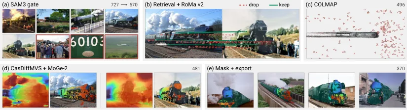
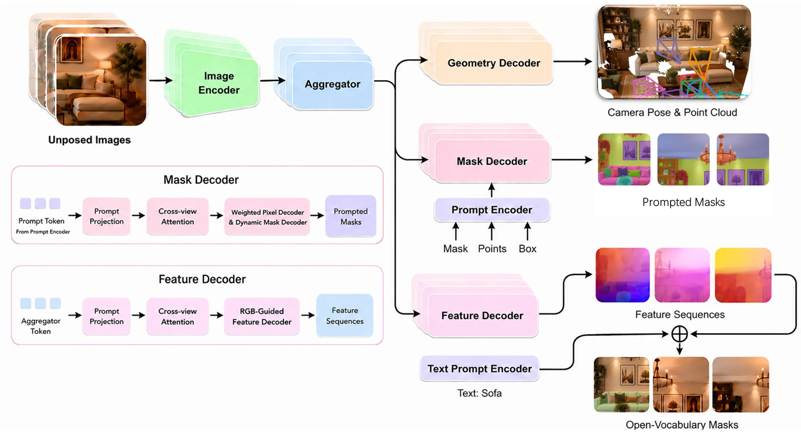
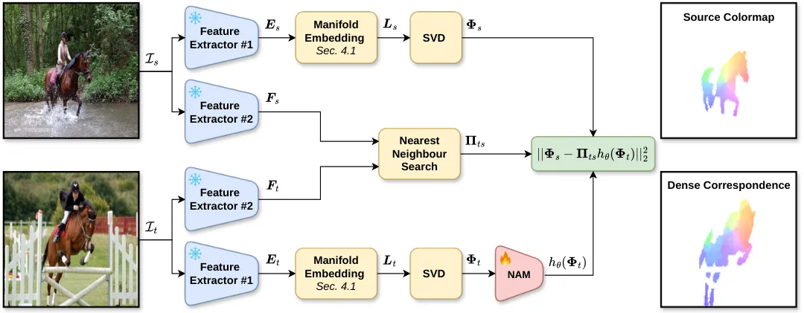

静态网页 · 2026-11-06
可靠状态估计与空间智能每日论文阅读
沿“底层几何 → 3D/4D 表征 → 空间推理 → 具身决策”查看当天候选；按层级、评分、截图和中文摘要筛选，需要原文时可切换 English。
候选论文：3推荐论文：3新论文：3仓库：23新仓库：3
今日概览
今天三篇论文分处“底层几何 → 3D/4D 表征 → 空间推理 → 具身决策”链条的最底层，而且都不是新网络：它们各自在数据、监督、后处理三处补了一个之前缺失的结构。
Trainspotting 补的是采集多样性：前馈重建模型在“同一物体被不同人、在不同年份、不同地点拍下”的照片上会崩，根因是训练数据全来自单次采集；它用 Wikimedia Commons 造出 12,068 个物体的伪真值，再微调 VGGT-Ω，把跨环境位姿 AUC@30 从 25 提到 81。Feature Puzzles 补的是语义层：几何主干已经够强，缺的是跨视角一致的语义，于是把一张图裁成重叠子图、用已知仿射映射精确搬运标签，在不碰任何真实多视角标注的情况下给主干加分割头。NAMI 补的是匹配的全局正则：最近邻匹配没有全局结构，它把基础模型特征当作图像曲面的高维嵌入，用离散 Laplace-Beltrami 算子 + 神经伴随映射把匹配拉回低频谱空间。
对做状态估计的人来说，这三篇合起来说明一件事：今天的增益可以来自训练分布、适配器接口、匹配正则，而不一定来自新主干或新后端。三篇的“方法动作”都比 headline 数字更值得记：把隐式的量显式化（环境变化 / 父图坐标 / 度量张量），再在这个显式量上做约束。

新论文 · 日期 2026-11-05 · score 20 · S层 · Geometry Foundation Models / 3D Foundation Models · cs.CV
内容级别：完整单篇海报
作者：Hanyu Chen, Noah Snavely
评分 10/10
3D 基础模型互联网照片重建物体中心重建伪真值流水线VGGT-Ω 微调相机位姿估计
一句话工作总结：把“互联网老照片”变成物体级伪真值：LLM 分类 + SAM3 门控 + RoMa v2 稠密匹配（置信度/循环/对极三重校验）+ COLMAP 增量重建 + CasDiffMVS 与 MoGe-2 单目复核，得到 12,068 物体 / 311,886 张照片；再用它微调 1B 的 VGGT-Ω（808M 可训练参数）得到 Spotter。留出物体上相机位姿 AUC@30…
当前前馈重建模型在真实场景的物体照片集合上表现很差，因为它们主要在“单次采集”的物体数据上训练：视角在变，物体与环境几乎不动。公共照片档案提供了另一种多视角数据——同一物体或同一设计被不同人、在不同年份、不同环境、不同相机乃至不同实体单元上拍下的“偶遇照片”。本文构建 Trainspotting：来自 Wikimedia Commons 的 12,068 个物体、311,886 张照片，并为每个物体恢复相机位姿、M…
State-of-the-art feedforward reconstruction models perform poorly on in-the-wild object-centric photo collections. They are trained largely on single-session object captures whose images vary in viewpoint whil…

新论文 · 日期 2026-11-04 · score 12 · S层 · Geometry Foundation Models / 3D Foundation Models · cs.CV
内容级别：完整单篇海报
作者：Jiahao Ma, Qiang Zhang, Miaomiao Liu, David Ahmedt-Aristizabal
评分 9/10
多视角一致分割单图监督LoRA 适配VGGT-Ω开放词表 3D 分割合成视角
一句话工作总结：把一张带标注的父图裁成 N 个重叠子图当作“合成视角”，因为子图到父图的仿射映射 π_n 是已知且可逆的，掩码与 DINOv3 特征可以做精确 pull-back，于是多视角一致性由构造保证、不需要任何真实多视角标注。在冻结的 VGGT-Ω 上用第 18 层起的 LoRA 加两个轻量头，NVOS mIoU 93.2（优于 MV-SAM 92.1、SAGA 92.6），Scan…
人类能在不同视角下认出同一物体，而让模型具备这种多视角一致感知通常需要视频或标定过的多视角采集，成本远高于大规模单目数据。本文提出 Feature Puzzles：只用单图语义分割监督，通过裁剪与几何变换构造多视角一致的分割伪标签，再用一个轻量、即插即用的网络，复用现有 3D 基础模型学到的多视角一致特征完成分割。框架支持单视角或多视角提示，并可扩展到开放词表 3D 分割。在 NVOS 上取得最佳 mIoU，在 S…
Humans can easily recognize the same objects across different viewpoints of a 3D scene, whereas teaching models such multi-view-consistent perception typically requires videos or calibrated multi-view captures…

新论文 · 日期 2026-11-03 · score 11 · S层 · Geometry Foundation Models / 3D Foundation Models · cs.CV
内容级别：完整单篇海报
作者：Nafie El Amrani, Moritz Heep, Florian Bernard
评分 8/10
functional mapsLaplace-Beltrami 算子神经伴随映射稠密对应零样本匹配流形嵌入
一句话工作总结：把基础模型特征当作图像曲面的高维嵌入，用双线性基函数 + Galerkin 离散得到图像 LBO（无需调核尺度），取其低频特征函数作谱坐标；再用一个轻量 MLP（NAM）学习源/目标谱基之间的非线性对齐，最近邻回投得到稠密对应。TSS 上 PCK@0.05 84.3（Cheng et al. 75.6、CleanDIFT 83.1），SPair-71k 上 PCK@0.2 7…
在同类不同实例的真实图像之间估计语义对应是计算机视觉的基础难题。基础模型的特征让这类匹配进步很大，但匹配往往正则不足：直接用最近邻在稠密对应上会产生大量噪声。本文把在 3D 形状匹配中成熟的 functional maps 框架搬到图像上。难点在于 functional maps 要求域具有有意义的几何，而图像网格是平的；作者把深度特征当作四边网格顶点的高维坐标，用有限元 Galerkin 方法导出离散 Lapla…
Estimating semantic correspondences between different object instances of similar categories in real-world images is a fundamental challenge in computer vision. While the recent progress in foundation models h…
精选仓库/项目
默认显示 8 个精选；S/A 领域、新仓库和高分仓库优先，可展开查看完整候选。
varunvarmaakhil-lgtm/ORIONSuccess-aware PPO for embodied navigation in Habitat-Lab: an auxiliary TD(λ) episode-success head cut final distance to goal by 39% across a 10-seed study.
新项目 · Python · ★ 0 · 更新 2026-11-05 · score 5 · A层 · Embodied Navigation / VLN / Spatial Reasoning
ParkWardRR/cairn-ios-companion-appiPhone GPS for ESP32 OBD-II dongles over BLE. Fixes poor GNSS lock for in-car data loggers. Swift, SwiftUI, CoreLocation, CoreBluetooth, NimBLE.
新项目 · Swift · ★ 0 · 更新 2026-11-05 · score 2 · C层 · 纯 GNSS/INS / PPP-AR
Topics：automotive, ble, blue-oak-model-license, bluetooth-low-energy, corebluetooth
jzr99/Mesh4D[CVPR 2026] Mesh4D: 4D Mesh Reconstruction and Tracking from Monocular Video
新项目 · Python · ★ 122 · 更新 2026-11-05 · score 3
★ 1 · 更新 2026-11-04 · score 13 · S层 · 3D/4D Spatial Perception
Xiaoang0211/ProMo3DOfficial implementation of ProMo3D (NeurIPS 2026): probing motion cues in frozen 3D foundation models.
Python · ★ 4 · 更新 2026-11-05 · score 8 · S层 · Geometry Foundation Models / 3D Foundation Models
JavaScript · ★ 0 · 更新 2026-11-05 · score 8 · S层 · 3D/4D Spatial Perception
bestzbf/MultiD4RTMultiD4RT: multi-camera 4D reconstruction, scene flow and 3D tracking from synchronized RGB
Python · ★ 0 · 更新 2026-11-05 · score 8 · S层 · 3D/4D Spatial Perception
Python · ★ 35 · 更新 2026-11-04 · score 10 · A层 · Robust State Estimation / Uncertainty
Topics：3dgs, 3dgs-slam, gaussian-splatting, slam
还有 15 个候选仓库
SeeleAI/OpenEVAA Family of Native 3D Foundation Models for both Understanding & Generation.
Python · ★ 13 · 更新 2026-11-05 · score 8 · S层 · Geometry Foundation Models / 3D Foundation Models
HTML · ★ 0 · 更新 2026-11-05 · score 8 · S层 · 3D/4D Spatial Perception
lisaweijler/latent-rfm[NeurIPS 2026] Latent Riemannian Flow Matching for Geometry-Grounded 3D Foundation Models
★ 1 · 更新 2026-11-03 · score 8 · S层 · Geometry Foundation Models / 3D Foundation Models
TingdeLiu/tingdeliu.github.ioResearch notes on embodied AI, vision-language navigation, and robot learning — paper surveys, in-depth readings, and engineering practice.
JavaScript · ★ 147 · 更新 2026-11-05 · score 8 · A层 · Embodied Navigation / VLN / Spatial Reasoning
Topics：ai-agent, chinese, embodied-ai, english, multimodal-learning
Python · ★ 14 · 更新 2026-11-05 · score 6 · A层 · Robotic Foundation Models / VLA
Topics：3d-generation, 3d-reconstruction, 3d-vision, awesome-list, computer-vision
★ 5 · 更新 2026-11-05 · score 5 · A层 · Embodied Navigation / VLN / Spatial Reasoning
Python · ★ 2 · 更新 2026-11-05 · score 5 · A层 · Embodied Navigation / VLN / Spatial Reasoning
HTML · ★ 0 · 更新 2026-11-05 · score 5 · A层 · Embodied Navigation / VLN / Spatial Reasoning
HTML · ★ 0 · 更新 2026-11-04 · score 5 · A层 · Embodied Navigation / VLN / Spatial Reasoning
Python · ★ 0 · 更新 2026-11-04 · score 5 · A层 · Robotic Foundation Models / VLA
HTML · ★ 0 · 更新 2026-11-05 · score 4 · C层 · 纯 GNSS/INS / PPP-AR
Python · ★ 0 · 更新 2026-11-05 · score 4 · C层 · 纯 GNSS/INS / PPP-AR
★ 289 · 更新 2026-11-05 · score 10
Topics：3d-geometric-foundation-models, dust3r, mast3r, slam, vggt
prs-eth/PaGeRPaGeR — Unified Panoramic Geometry Estimation via Multi-View Foundation Models
Python · ★ 161 · 更新 2026-11-04 · score 3
Jingong-Chen/Any3RAny3R: Feedforward 3D Reconstruction from Any Camera Type — pinhole, fisheye beyond 180°, 360° panoramas, or any mix, in one forward pass
Python · ★ 49 · 更新 2026-11-02 · score 2
Topics：3d-reconstruction, camera-pose-estimation, computer-vision, depth-estimation, feed-forward